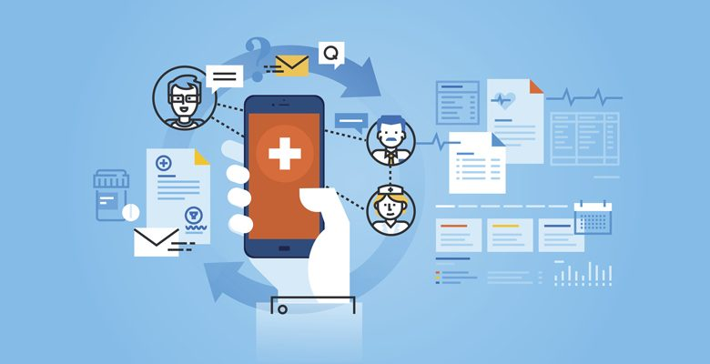
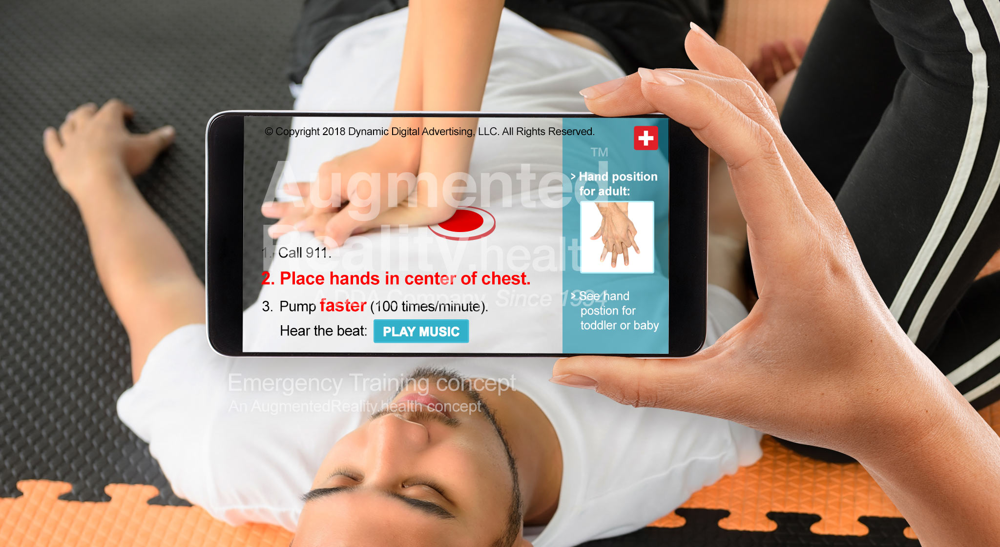
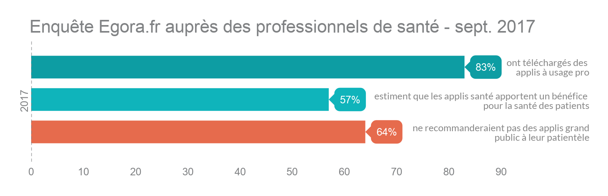

« mHealth » pour Mobile Health, la M-santé est tous les services touchant de près ou de loin à la santé disponibles en permanence via un appareil mobile connecté à un réseau ; les plus répandus auprès du grand public étant les smartphones ou plus récemment encore les tablettes informatiques.
En d’autres termes, on peut dire également que la m-santé est l’e-santé accessible avec un téléphone mobile ou un tablette.

La Fondation des Nations Unies a même organisé la définition de la mHealth avec les six catégories d’applications dans le domaine de la santé mobile :
Éducation et sensibilisation
Téléassistance
Diagnostic et traitement de soutien
Communication et formation pour les professionnels de santé
La maladie et le suivi d’une épidémie
La surveillance et la collecte de données à distance
Au sein de ces applications, on retrouve diverses typologies de services et outils proposés tels que :
Guides thérapeutiques.
Calculatrices et scores médicaux.
Analyses de courbes.
Cotations des actes médicaux.
Aides aux premiers secours, gestes d’urgence.
Fiches pratiques.
Géolocalisation.
Applications de bien-être (ma grossesse, iSommeil…).
Applications de prévention (Kisovki, Zerotracas, Besoin d’aide…).
Mise en relation avec un panel d’experts.
Mise en relation avec une communauté de patient (ex : PatientsLikeMe).
Scanner un produit ou un médicament (permettant notamment le suivi de son traitement mais également s’assurer de la traçabilité. Sproxil permet par exemple de savoir si un médicament est faux par l’envoi d’un simple SMS).
En terme d’innovation majeure, on peut citer la réalité augmentée, qui selon les spécialistes du secteur, sera un des atouts majeurs dans le développement de la m-santé.
Par exemple, l’application « Ar training » qui permet de faire des massages cardiaques. Dans un premier temps, on visualise le malade à l’aide de la caméra de son iPhone, puis l’application vous indique à quel endroit il faut se placer et comment procéder aux bons gestes.
Ar Training - réalité augmentée pour des massages cardiaques

Des avantages pour les patients
Prévention de certaines pathologies (cardiovasculaires, AVC) en intervenant sur le surpoids, l'alimentation, la consommation d'alcool ou de tabac.
Amélioration de l'observance : suivi plus aisé des traitements et plus grande implication.
Meilleure qualité de vie des patients : conseils personnalisés et plus grande autonomie.
Des outils au service du système de santé
La transmission des informations au corps médical permet :
aux professionnels de santé d'avoir plus de temps pour leur mission de soins
le suivi en continu du patient et la programmation de rendez-vous en cas de besoin
la réduction des hospitalisations et des durées de séjour aux professionnels de santé d'avoir plus de temps pour leur mission de soins
le suivi en continu du patient et la programmation de rendez-vous en cas de besoin
la réduction des hospitalisations et des durées de séjour
Le partage d'informations entre professionnels de santé favorise la coordination des intervenants.

Des obstacles à une utilisation plus large
Délais d'évaluation trop longs au regard du rythme rapide des progrès technologiques.
Inquiétude sur la régulation des données de santé et notamment leur confidentialité.
Doutes sur la fiabilité des objets connectés.
Absence de politique de rémunération de prévention.
Formation insuffisante des professionnels de santé.
Manque de structuration de la filière de e-santé, ne permettant pas de structurer le dialogue avec les pouvoirs publics.
Les actions permettant l'essor de la m-santé
Labellisation pour soutenir le marché et instaurer un climat de confiance.
Accroissement de la formation numérique des professionnels de santé.
Incitation tarifaire à s'investir dans la prévention (versus paiement à l'acte).
Remboursement par la Sécurité sociale des applications et objets connectés en santé dont l'efficacité est démontrée.
Grand plan d'investissement 2018 - 2022 : 4,9 milliards d'euros pour accélérer la numérisation du système de santé et de cohésion sociale.
La téléconsultation
Qu'est ce que la téléconsultation ?
La téléconsultation est une forme de consultation médicale qui s'effectue à distance. Toutes les nouvelles technologies de l'information et de la communication peuvent servir de support à la téléconsultation. Cette médecine à distance facilite l'accès aux soins et évite au malade d'avoir à se déplacer. Comme pour la éléexpertise tout médecin peut recourir à la téléconsultation, quels que soient : sa spécialité, son secteur d’exercice et son lieu d’exercice, en ville ou en établissement de santé (cabinet de ville, maison de santé pluriprofessionnelle, centre de santé, Ehpad, hôpital,clinique…). Elle peut être réalisée partout en France métropolitaine et dans les départements et régions d'outre-mer (DROM) ainsi qu’à Mayotte.Le patient peut bénéficier d’une téléconsultation seul ou accompagné par un professionnel de santé, si son état le nécessite, depuis son domicile via un site ou une application sécurisé(e) sur un ordinateur, une tablette ou un smartphone, équipé(e) d’une webcam et relié(e) à Internet ou depuis un lieu dédié équipé comme par exemple une maison de santé pluriprofessionnelle, une pharmacie équipée d’une cabine ou d'un chariot de téléconsultation.
Une téléconsultation se déroule comme une consultation classique, en partant d’une demande de rendez-vous ou sur proposition du médecin traitant.En amont de la consultation, le médecin envoie un lien Internet à son patient, l’invitant à se connecter à l’heure prévue du rendez-vous à un site Internet ou une application sécurisé(e),depuis un ordinateur ou une tablette équipé(e) d’une webcam et relié(e) à Internet.A l’issue d’une téléconsultation, le médecin peut établir, si nécessaire, une prescription (médicaments, examens complémentaires), qui sera transmise au patient sous format papier, par voie postale, ou sous format électronique, via notamment une messagerie sécurisée, dans des conditions garantissant la confidentialité et la sécurité des échanges. Les soins prescrits à la suite de la téléconsultation sont pris en charge dans les conditions habituelles.
la téléexpertise est l'Intervention d’un expert grâce à des moyens de communication et d’information, sans que celui-ci se déplace sur le lieu de l’élément à expertiser. Elle met en rapport, entre eux ou avec un patient, un ou plusieurs professionnels de santé qui peuvent être de différents domaines. c'est l'ensemble des moyens permettant à un expert de demander ou de solliciter l'avis d'un ou plusieurs autres professionnels dans le domaine de la santé. Le but est de permettre une amélioration de l'accès au soins notamment dans les zones fragiles et d'améliorer l'efficience de l'organisation du systeme de soins. La téléexpertise permet d'éviter les erreurs de diagnostic pouvant arriver lorsqu'un seul expert étudie les pathologies d'un patient. Ce procédé permet d'affiner les diagnostic afin de pouvoir traiter les patients plus efficacement et facilement afin de pouvoir à terme , en plus d'améliorer la santé des patients, faire des économies pour le milieu médical qui souffre déja énormement d'un manque important de ressources. Elle donne donc la possibilité à un patient de recevoir un avis spécialisé pour son traitement même si il n'y a pas de spécialiste compétent dans son secteur.Tout médecin peut recourir à la téléexpertise, quels que soient : sa spécialité, son secteur d’exercice et son lieu d’exercice, en ville ou en établissement de santé tel que cabinet de ville, maison de santé, centre de santé, Ehpad, hôpital, clinique ou autre.
L'utilisation de la téléexpertise :
Il y a 2 niveaux de téléexpertise :
-Le premier niveau ne nécessite pas la connaissance préalable du patient par le téléexpert. Il s’agit d’une question « simple » comme :
-j’ai un doute sur l’Echographie de Mr X que je te joins, qu’en penses tu ?
-y a t’il urgence à t’adresser le patient pour la lésion dont je t’adresse la photo ?
-chez Mme Y que tu connais, je voudrais arrêter le médicament Y et souhaite ton avis.
-le second niveau nécessite la connaissance préalable du patient par le téléexpert et est nécessaire lors de certains cas particuliers comme :
-la surveillance en cancérologie dans le cadre de la suspicion d’une évolution
-le suivi d’une plaie chronique en état d’aggravation
-le suivi d’évolution complexe de maladie inflammatoire chronique